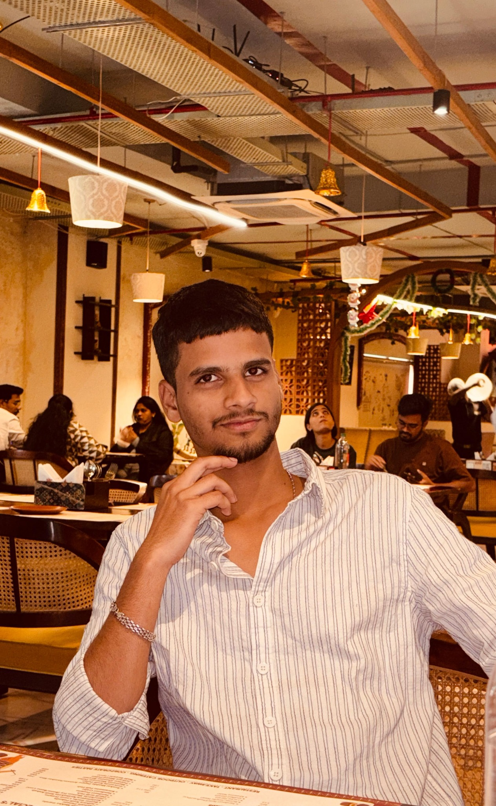
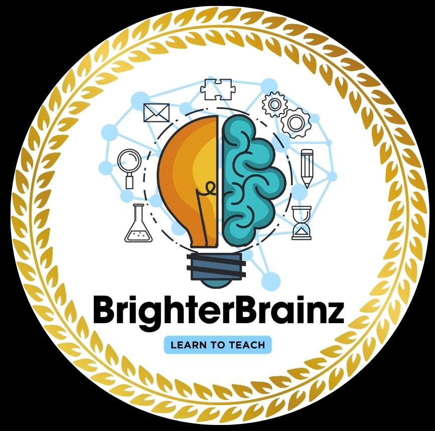
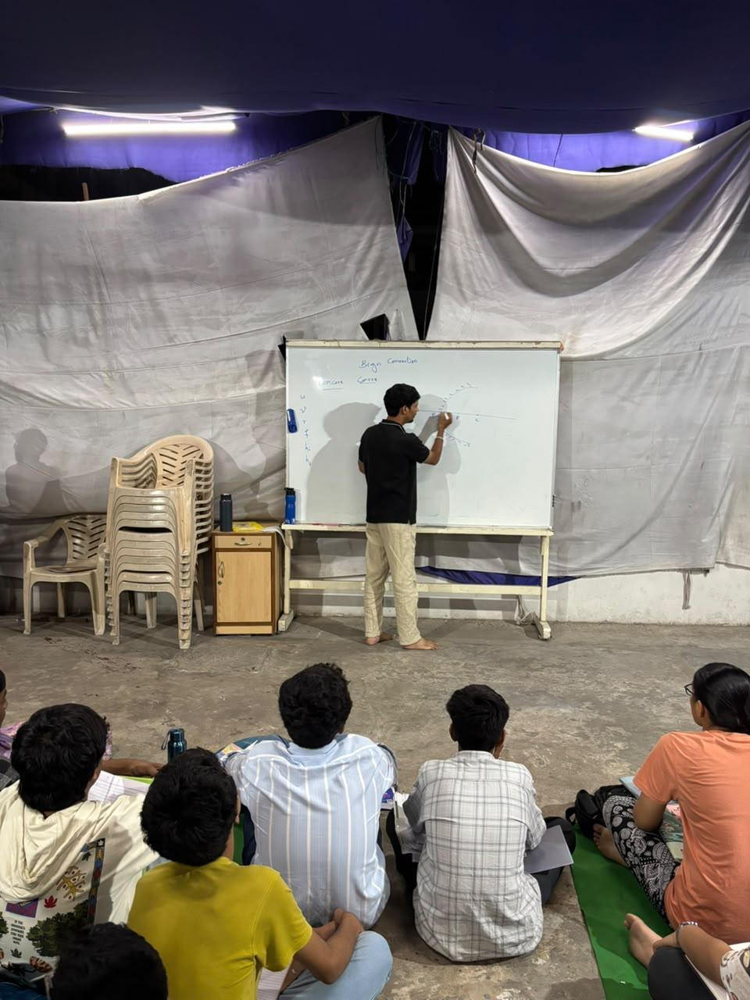
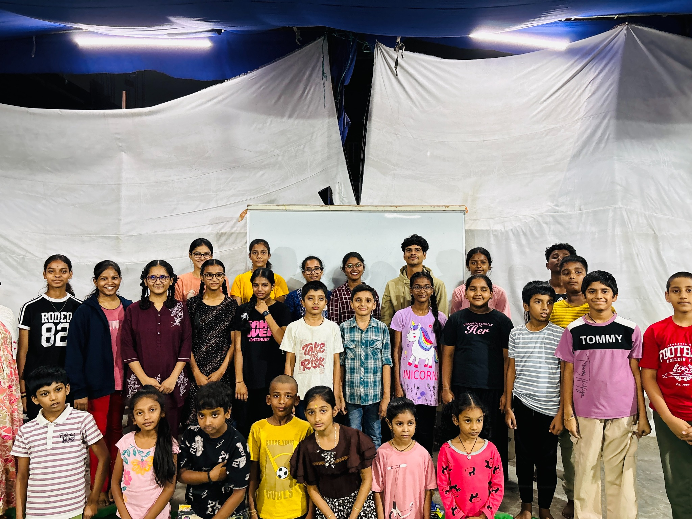
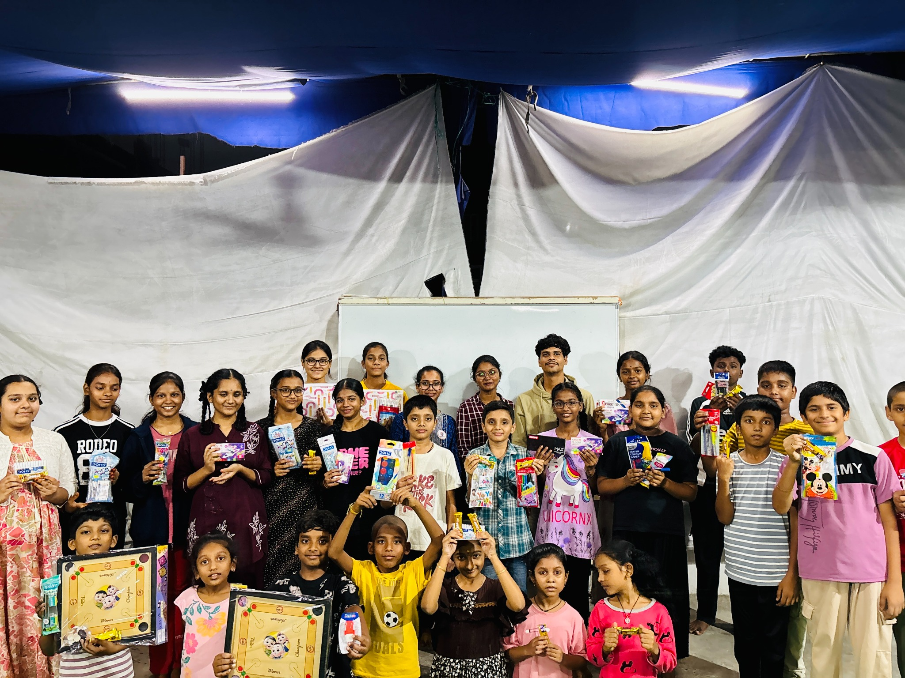
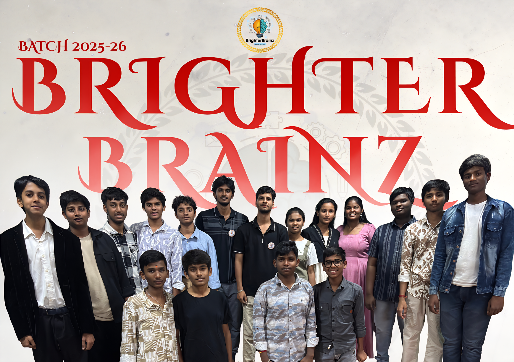
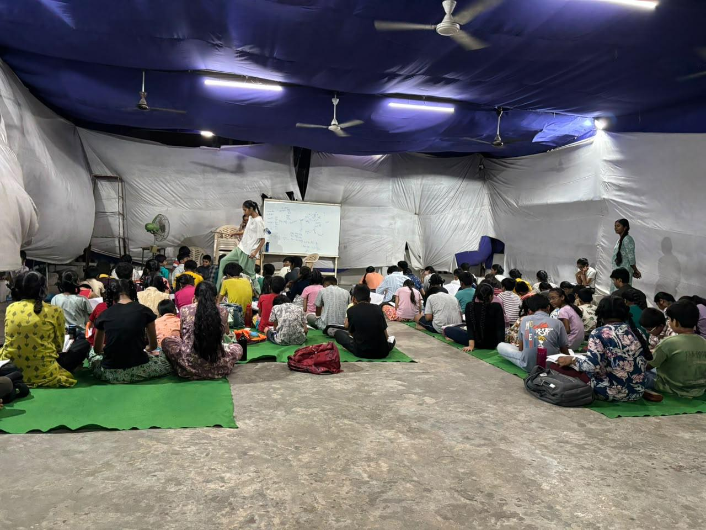

COLLEGE LEADERSHIP
Technical Events & Team Leadership
Organised and led multiple technical events, hackathons and project expos in college, coordinating people, planning execution and taking responsibility from idea to completion.
CSE Student · Software Engineer Trainee · Founder
A Computer Science engineering student, software engineer trainee and founder of Brighter Brainz Academy — building my technical career while growing a learning community through the philosophy Learn to Teach.


01 / About me
I'm a 4th-year B.Tech Computer Science student who enjoys turning what I learn into things I can build, explain and share.
I'm currently developing my foundation across programming, web technologies, databases, Python and machine learning. Alongside that technical path, founding Brighter Brainz has taught me leadership, mentoring, communication and how to turn a small idea into something people grow with. I also train my co-tutors, helping them build confidence in teaching, communication, mentoring and taking responsibility.
Either I win, or I learn.
A mindset I try to carry forward.My leadership journey started during my schooling itself. Whenever I was given an opportunity to lead, organise or take responsibility, I stepped forward. That mindset continued through college, where I have organised and led multiple technical events, hackathons and project expos, while also taking leadership responsibilities in student activities.
02 / Brighter Brainz
From 2 students to 85+ — a learning community built one class at a time.
Brighter Brainz started in 2023 with just 2 students. In three years, it has grown into a community of 85+ students spanning Class 1 to Intermediate 2nd Year. What began as teaching has grown into a platform for learning, mentoring and creating opportunities.
The academy now works with several co-tutors, including students pursuing B.Tech and degree programs. I also train and mentor the co-tutors, helping them develop teaching, communication and mentoring skills while giving them early employability opportunities through real responsibility and experience.





From a 2-student beginning to 85+ learners — Brighter Brainz is becoming a community where students learn and young co-tutors get a chance to teach, lead and grow.
03 / Experience & Leadership
INTERNSHIP · AUG 2026 — OCT 2026
Currently gaining practical exposure to software engineering workflows, development practices and technical problem-solving as part of my early professional journey.
COLLEGE LEADERSHIP
Organised and led multiple technical events, hackathons and project expos in college, coordinating people, planning execution and taking responsibility from idea to completion.
A LEADERSHIP HABIT
My leadership journey began in school. From the very beginning, I stepped forward whenever I had an opportunity to organise, lead or take responsibility — a habit that continues through college and Brighter Brainz.
04 / Skills
Programming foundations
Programming & exploration
Web fundamentals
Database fundamentals
Foundational knowledge
Always expanding
*These represent my current learning level and foundations, not claims of expert proficiency.
05 / Selected project
01
A college project exploring computer vision and transfer learning for automated fracture detection from medical images.
Presented as part of my academic project work.
06 / Let's connect
Whether it's technology, learning, collaboration or Brighter Brainz — I'm always open to meaningful conversations.
nikkimudhiraj05@gmail.com ↗